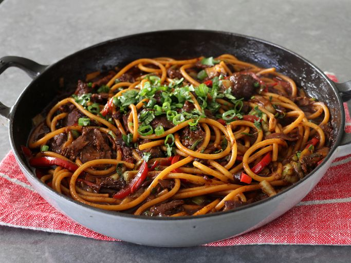

Noodle Recipe

INGREDIENTS
For the miso beef sauce
- 1/3 cup red miso paste
- 3 tablespoons maple syrup
- 1/4 cup rice vinegar
- 1 tablespoon soy sauce
- 1/2 teaspoon garlic powder
- 1/2 teaspoon freshly ground black pepper
- 1 teaspoon kosher salt
- 1 teaspoon sriracha hot sauce, or to taste
- 2 1/4 pounds boneless beef chuck roast
- 1 medium yellow onion, sliced
- 3 clove cloves garlic, minced
- 2/3 cups water
For the noodle dish:
- 3 cups water
- 1 cup sliced red bell peppers
- 1/2 cup sliced green onions, plus more to garnish the top
- 3 cups sliced bok choy
- 1/4 cup chopped cilantro
- 1 teaspoon cornstarch, optional
- 2 teaspoons water to mix with cornstarch
- 8 ounces bucatini (or any other noodle or pasta)
Directions
Step 1
-
Preheat the oven to 350 degrees F (175 degrees C).
Step 2
-
Combine red miso paste, maple syrup, rice vinegar, soy sauce, garlic powder,
black pepper, kosher salt, and sriracha in a mixing bowl and whisk until
smooth.
Step 3
-
Add beef to the bowl and coat thoroughly on both sides, poking beef all over
with a fork to allow the marinade to soak into the meat.
Step 4
-
Add onions and minced garlic to a braising pan, and distribute evenly. Top with
beef, and all the sauce mixture. Spread sauce over top
of beef, and add 2/3 cup water around the meat.
Step 5
- Transfer pan to the preheated oven and roast for 1 hour. Remove from oven, flip
beef over, and spoon pan drippings over the top. Return
to the oven and roast for 1 hour more.
Cover pan and continue roasting for 1 more hour.
Step 6
-
Remove from the oven and let cool. Spoon the caramelized onions over the meat.
Cover and refrigerate overnight (NOTE: meat can be cut up
and the recipe finished as shown without the overnight refrigeration step).
Step 7
-
The next day, cut cold beef into 1/2 inch pieces, and return to the pan. Add 3 cups
of water, place over high heat, and bring to a simmer.
Simmer, stirring occasionally, until the meat is tender, about 45 minutes.
Step 8
-
Stir bell peppers, green onions, and bok choy into the pan. Raise heat to medium, and
cook until vegetables are as tender as
desired, 5 to 10 minutes
Step 9
-
Meanwhile, bring a large pot of lightly salted water to a boil. Cook bucatini in the
boiling water, stirring occasionally, until tender yet
firm to the bite, 9 to 12 minutes
Step 10
-
Mix cornstarch and 2 teaspoons of water in a small bowl. Stir into the sauce
(only if you like a thicker sauce) and cook for about 1 minutes, while
stirring. Transfer cooked noodles to the pan using tongs and toss to combine.
Step 11
-
Serve immediately with cilantro and green onions if desired.